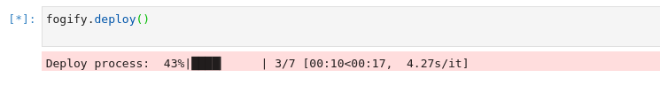
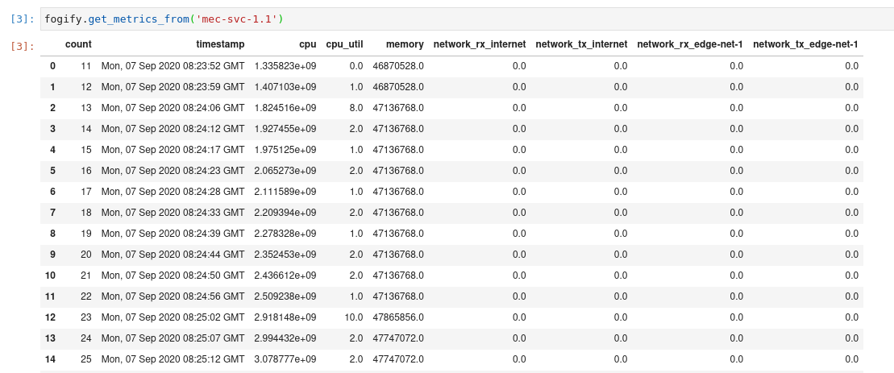
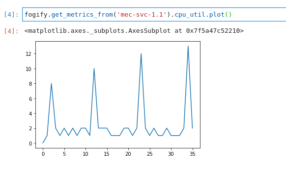
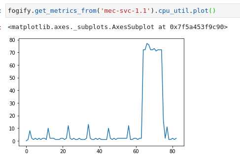
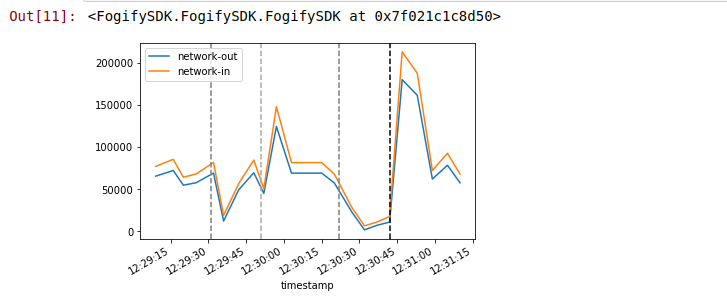
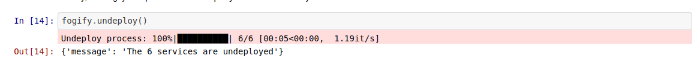

Getting started
On this page you build a simple Python micro-service IoT application that is driven by real-world data to showcase a scenario of a taxi-cab company that collects and analyzes location-based data from its fleet. The application includes three services: a workload generator, an edge server and a cloud server, all utilize the Flask framework. Even if the example is written in Python, the concepts demonstrated are understandable even if you’re not familiar with it.
Prerequisites
Before start the tutorial, make sure that already follow the installation guide of Fogify. You do not need to install anything else, such as python, since it is provided as Docker image. If you are not familiar with docker, you can find some information at the section of Services and at the Docker Official Documentation.
Jupyter GUI
Even if Fogify exposes a REST API for interacting with the emulated testbed, it provides an extra python SDK with programming primitives. The FogifySDK gives us the opportunity to interconnect the Fogify with external systems like Jupyter. The integration with Jupyter, as described in Fogify Docker-compose installation, provides a GUI for Fogify and an interactive way to work with it. Users can submit IoT service descriptions adopting the Fogify model specification, manipulate service execution by applying actions and submitting “what-if” scenarios, extract real-time monitoring data and assess running deployments. Furthermore, the Fogify SDK has a set of built-in analytics functions applicable on monitoring data, as well as, plotting functionality for easing metric examination.
Next image provides a snapshot of the Jupyter interface integrated with FogifySDK.
Users can use the editor provided by Jupyter to write the configuration yaml files,
while interact with Fogify through the Jupyter Notebooks. We suggest the use of JupyterLab as Jupyter GUI,
since it provides many coding IDE features that the developers are familiar with.
For more information about how can you reach the Jupyter Web GUI check the Fogify’s Docker-compose installation guide.
Next we describe step-by-step an application deployment on Fogify system.
Step 1: Create the Application
Since the focus of this tutorial is not the coding, you will find the demonstration code on github https://github.com/UCY-LINC-LAB/fogify-demo .
Specifically, you have only to download the repository and navigate to application folder and execute the build-image.sh script.
The script builds the Image that we will describe in the following section.
├── application
│ ├── build-image.sh
│ ├── docker-compose.yaml
│ └── taxi_exp
│ ├── code
│ │ ├── collect_metrics.py
│ │ ├── cronjobs
│ │ ├── edge_server.py
│ │ ├── entrypoint.sh
│ │ ├── __init__.py
│ │ ├── send_metrics_to_server.py
│ │ ├── server.py
│ │ └── utils
│ │ ├── edge_fuctionality.py
│ │ └── __init__.py
│ ├── Dockerfile
│ └── requirements.txt
Step 2: Build the Dockerfile
The repository provides the following Dockerfile, however, it is reasonable to describe it.
The first line describes that dockerfile is based on python:3.6.
Next, it install a set of tools that is required from Fogify (cpulimit and stress tools).
At the next step, Dockerfile introduces the example’s code and configures the cron jobs (essential for this example).
Finally, Dockerfile configures the entrypoint of the image. For more information about dockerfiles,
you can read the docker’s official documentation about dockerfiles.
cpulimit and stress are not installed on the docker image, Fogify will only not provide stress actions.
However, the rest Fogify functionalities will be provided and not effect Fogify’s execution.
# Pull base image of Python
FROM python:3.6
# Set environment variables
ENV PYTHONDONTWRITEBYTECODE 1
ENV PYTHONUNBUFFERED 1
# Install the cpu-limit and stress tool pre-requirements for fully functional Fogify
RUN git clone https://github.com/opsengine/cpulimit/
WORKDIR cpulimit
RUN make && cp src/cpulimit /usr/bin
RUN apt-get update && apt-get install -y stress && apt-get -y install cron rsyslog
# Add the python code
RUN mkdir /code
WORKDIR /code
ADD requirements.txt /code/
RUN pip install -r requirements.txt
EXPOSE 8000
ADD ./code/ /code/
# Install cron tab
RUN chmod 0644 /code/cronjobs
RUN echo "cron.* /var/log/cron.log" >> /etc/rsyslog.conf
RUN service rsyslog start
# Insert and execute entrypoint
RUN chmod +x /code/entrypoint.sh
CMD ["/bin/bash", "/code/entrypoint.sh"]
Step 3: Create the Compose file
This is the initial docker-compose file of the project. This file includes four services, namely,
cloud-server, mec-svc-1, mec-svc-2, car-workload. Each service executes a different part of code, specifically:
- cloud-server: gathers the results of all MECs and stores them
- mec-svc-1 & mec-svc-2: should be deployed on different regions, capture the regional data and preprocess them
- car-workload: this service generates the streams of regional data
version: '3.7'
services:
cloud-server:
image: taxi-exp:0.0.1
environment:
NODE_TYPE: CLOUD_NODE
car-workload:
image: taxi-exp:0.0.1
environment:
NODE_TYPE: IOT_NODE
volumes:
- /home/ubuntu/data:/data
mec-svc-1:
image: taxi-exp:0.0.1
environment:
NODE_TYPE: EDGE_NODE
REGION: bronx
mec-svc-2:
image: taxi-exp:0.0.1
environment:
NODE_TYPE: EDGE_NODE
REGION: brooklyn
Step 4: Introduce the Fogify Model
When the docker-compose is ready, user can extend it to capture the extra features of the Fogify Framework.
The following part of the extend docker-compose yaml file illustrates three required components of the model: nodes, networks and topology.
...
x-fogify:
nodes:
...
networks:
...
topology:
...
Nodes
Nodes template is used to define Fog resources. In our scenario we have 3 different types of nodes
(car-node, cloud-server-node, and edge-node).
The Node template allows users to describe the resource characteristics of a physical or virtual host,
including properties for the Processor, Memory, and Storage.
nodes:
- name: cloud-server-node
capabilities:
processor:
cores: 4
clock_speed: 1400
memory: 4G
- name: edge-node
capabilities:
processor:
cores: 2
clock_speed: 1400
memory: 2G
- name: car-node
capabilities:
processor:
cores: 1
clock_speed: 700
memory: 0.5G
For more details about nodes you can visit the node profile documentation page.
Networks
Networks template is used to define inter-connecting mesh networks and links among Fog nodes.
Fog nodes can be directly connected via an emulated physical link and/or belong to the same network administrative domain.
Furthermore, network template provides a wide variety of properties like bandwidth, network delay, drop rate, etc.
The following networks sub-section describes the networks that exist at our example.
Starting from the internet network definition, we can identify different network characteristics for uplink and downlink properties.
Furthermore, we described two extra regional networks, namely edge-net-1 and edge-net-2 that only characterized by
bidirectional characteristics. The bidirectional property defines the same network characteristics for both uplink and downlink directions.
networks:
- name: internet
uplink:
bandwidth: 10Mbps
latency:
delay: 50ms
drop: 0.1%
downlink:
bandwidth: 5Mbps
latency:
delay: 50ms
- name: edge-net-1
bidirectional:
bandwidth: 100Mbps
latency:
delay: 5ms
drop: 0.1%
- name: edge-net-2
bidirectional:
bandwidth: 100Mbps
latency:
delay: 5ms
drop: 0.1%
For more details about networks you can visit the network profile documentation page.
Topology
Services, Nodes and Networks only describe the provisioning of services and resources, lacking information on
how a fog topology is realised and interconnected and where services are placed.
So, Fogify provides the Topology primitive, enabling users to specify a set of Blueprints,
which is a combination of a Node, Service, set of Networks, replicas and a label.
For instance, the Blueprint of the following code part materializes two vehicles (replicas: 2) that are connected to
the mec-net-1 and internet networks, and run the car-workload service.
- node: car-node
service: car-workload
label: car-workload-1
replicas: 2
networks:
- edge-net-1
- internet
Similarly, the user describes all components from the application scenario illustrated as are depicted on the following code snippet. The combination of services, nodes and templates allows users to create more complex topologies.
topology:
- node: cloud-server-node
service: cloud-server
label: cloud-server
replicas: 1
networks:
- internet
- node: edge-node
service: mec-svc-1
label: mec-svc-1
replicas: 1
networks:
- edge-net-1
- internet
- node: edge-node
service: mec-svc-2
label: mec-svc-2
replicas: 1
networks:
- edge-net-2
- internet
- node: car-node
service: car-workload
label: car-workload-1
replicas: 2
networks:
- edge-net-1
- internet
- node: car-node
service: car-workload
label: car-workload-2
replicas: 2
networks:
- edge-net-2
- internet
For more details about topologies and blueprints you can visit the documentation page.
Step 5: Deploy the topology
Even if users can use a RESTful API to deploy topologies on Fogify,
the easiest way is by utilizing the FogifySDK (integrated with Jupyter). The following lines of code illustrate the use of FogifySDK.
Specifically, the user imports the SDK, instantiates a fogify object that includes information about the controller’s url
and the topology description file, and, finally, executes the deploy function that submits the topology to the fogify’s Controller.
from FogifySDK import FogifySDK
fogify = FogifySDK("http://controller:5000","docker-compose.yaml")
fogify.deploy()
While the Fogify is trying to deploy the topology, system displays a progress bar.

At the end, when the deployment is over, the system generates a simple message to the end-users.

Step 6: Retrieve Metrics
In order to retrieve the monitoring metrics from a specific service, users can just execute the following command.
fogify.get_metrics_from('mec-svc-1.1')
label along with
the instance’s number. For instance, the service’s label at the following example is the mec-svc-1 and the instance number is the 1.
The results of the above command will produce the following table on Jupyter Notebook.

The above table is a pandas dataframe, so, users can generate a wide rage of plots from it.
For instance, a user can generate the plot of CPU utilization by executing the following command.

Step 7: Run an ad-hoc action
Fogify gives users the opportunity to execute ad-hoc actions (see Actions & Scenarios section).
The possible actions include horizontal scaling, vertical scaling, network changes, stressing of resources, and
direct commands on emulated nodes. The following code snippet displays an example of the action’s execution. Specifically,
on the previous running topology we injected a stress action that fires a 70% cpu intensive workload in mec-svc-1.1 instance.
fogify.stress('mec-svc-1', cpu=70)
In order to observe if the action has the desirable effects, we retrieve again the metrics of the instance and plot the cpu utilization. As you can see on the following image, the effect took place for one minute between 65-75 intervals.

Step 8: Build and run a Fogify Scenario
With actions tested, let us introduce the Scenarios, which is a sequence of time-based actions. Following we describe
a scenario that degrades the network connectivity of mec-svc-1. Specifically, after 5 seconds from the scenario beginning
the network connectivity of mec-svc-1 degrades with a network latency up to 50ms per request.
Similarly, after 15 seconds the network get worse with 150ms and, finally, after 5 seconds the network delay reach 3000ms per request.
scenarios:
- name: scenario_network_error
actions:
- time: 20
instance_type: car-1
instances: 1
position: 0
action:
type: network
parameters:
network: MEC-net-1
uplink:
latency:
delay: 50ms
- time: 20
instance_type: car-1
instances: 1
position: 1
action:
type: network
parameters:
network: MEC-net-1
uplink:
latency:
delay: 150ms
- time: 0
instance_type: car-2
instances: 1
position: 2
action:
type: scale-in
parameters:
num-of-instances: 1
In order to execute the scenario, FogifySDK provides the scenario_execution function that submits a scenario to Fogify.
Next snippet of code executes a pipeline of actions. Especially, user submits the scenario and, then, Fogify executes
the scenario by executing one-by-one all the actions. Furthermore, Fogify displays a progress bar of the scenario execution.
start, end = fogify.scenario_execution('scenario_1')
Next, we demonstrate the results of the previous code execution.

Step 9: Representation of the Results
In order to have an overview about the scenario’s execution, Fogify gives to the users specific methods of results representation. For instance, after the previous scenario’s execution, the user retrieves the generated data by filtering by scenario’s time-range. Furthermore, Fogify provides the timestamp of the events and user is able to combine them. In the following code part, user retrieves the data of mec-svc-1 service, generates the edge network-out and network-in timelines, and, also, depicts the timestamp ( vertical lines ) of the scenario’s actions.
import matplotlib.pyplot as plt
import pandas as pd
fig, ax = plt.subplots()
data = fogify.get_metrics_from('mec-svc-1.1')
data = data[data.index>start]
data = data[data.index<end]
data['network_tx_edge-net-1'].diff().plot(ax=ax,label="network-out")
data['network_rx_edge-net-1'].diff().plot(ax=ax,label="network-in")
ax.legend()
fogify.plot_annotations(ax, start=start, stop=end, colors_gist=['gray','darkgray', 'gray', 'black'])
The results of the previous lines are illustrated on the following image:

Step 10: Undeploy the Topology
Finally, the user undeploys the emulated infrastructure by executing the undeploy method.
fogify.undeploy()
The Fogify provides a process bar during the undeployment process. When all instances are destroyed, system visualizes a representative message.
